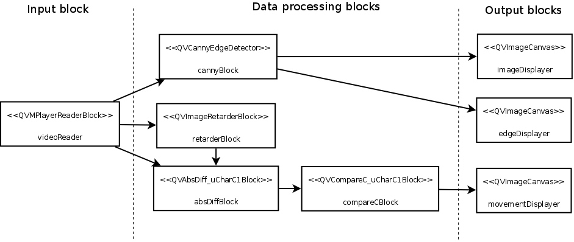
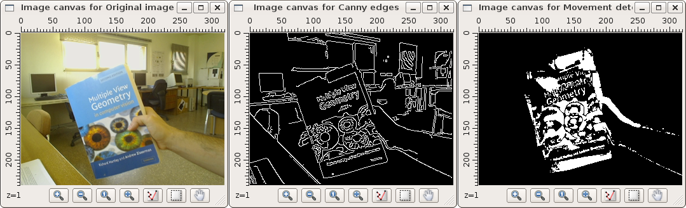
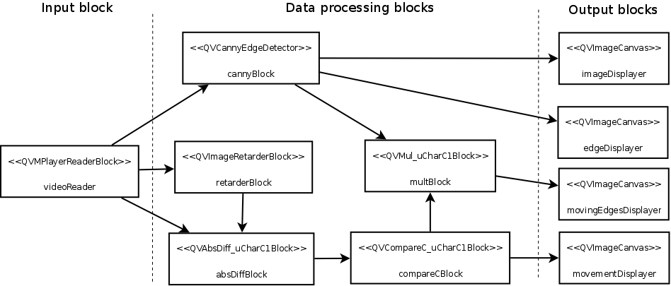
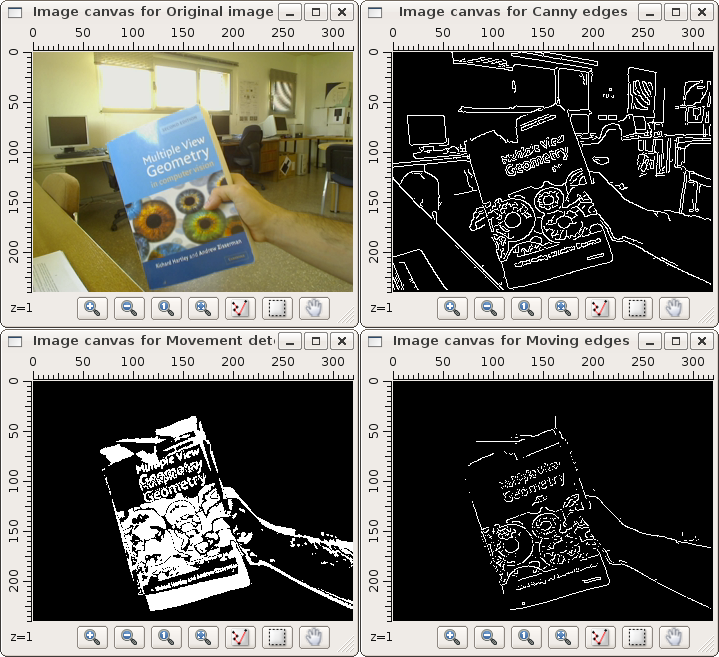

PARP Research Group
PARP Research Group
| PARP Research Group |
Universidad de Murcia |
An advanced block-oriented exampleIn this section we will create a complex block-oriented application, that runs several block objects and transfers data between them. This application will ingenuously solve the problem of moving edge detection: in a video sequence, containing both still and moving objects, detect edges corresponding only to the moving objects. To do so, our application will add a movement detector to the example application described at section Creating the first block-oriented application, which detects edges at the input frames from a video sequence, using the Canny edge detector. The movement information will be used to identify the segments corresponding to moving objects. The movement detection will provide a binary movement response image, containing a true value at each pixel corresponding to a moving object or surface. The application will obtained this image, by simply thresholding the absolute difference between the last image read from the video sequence, and the image read back at a fixed number of frames in the video sequence. We will use three new block objects of type QVImageRetarderBlock, QVAbsDiff_uCharC1Block, and QVCompareC_uCharC1Block to obtain the binary image. First we will add the necessary includes in the original Canny edge detector example application: #include <QVImageRetarderBlock> #include <qvippblocks.h> Next we add the code to create the block objects, and link them to obtain the movement response image. It should be created before the call to the QVApplication::exec() method, in the main function of the Canny example: QVImageRetarderBlock<uChar,1> retarderBlock("Image retarder block"); QVAbsDiff_uCharC1Block absDiffBlock("Absolute difference block"); QVCompareC_uCharC1Block compareCBlock("Threshold block"); QVImageCanvas movementDisplayer("Movement detector"); compareCBlock.setPropertyValue<IppCmpOp>("ippCmpOp", ippCmpGreater); compareCBlock.setPropertyValue<uChar>("value", 32); videoReader.linkProperty(&retarderBlock, "Input image"); videoReader.linkProperty(&absDiffBlock, "qvimage_pSrc1"); retarderBlock.linkProperty("Output image", &absDiffBlock, "qvimage_pSrc2", QVProcessingBlock::SynchronousLink); absDiffBlock.linkProperty("qvimage_pDst", &compareCBlock, "qvimage_pSrc", QVProcessingBlock::SynchronousLink); compareCBlock.linkProperty("qvimage_pDst", movementDisplayer); The following image displays the resulting application block structure:

The application can be compiled and executed as the original Canny example: # qmake-qt4; make # ./blockExample --URL=moving-hartley.mpg The moving-hartley.mpg is one of our test videos. It shows a static lab scene where a hand is shaking a computer vision bible. The following is a screen capture of what the application displays in the three image canvas:

Combining edge and movement informationTo identify the moving edges in the input video sequence, the application must combine the information contained in the edge response image, and in the movement response image. The first approach to combine them can be a pixel-wise image product of both images. We can use the class QVMul_uCharC1Block to create a processing block that obtains the product of both the edge response image, and the movement response image: QVMul_uCharC1Block multBlock("Product block"); QVImageCanvas movingEdgesDisplayer("Detected moving edges"); cannyBlock.linkProperty("Output image", &multBlock, "qvimage_pSrc1", QVProcessingBlock::SynchronousLink); compareCBlock.linkProperty("qvimage_pDst", &multBlock, "qvimage_pSrc2", QVProcessingBlock::SynchronousLink); multBlock.linkProperty("qvimage_pDst", movingEdgesDisplayer); The resulting image (that will be displayed in the movingEdgesDisplayer image canvas) will contain the value of 255 at the pixels active in both the movement response image, and the edge response image. For the rest of the pixels, the image will contain the 0 value. The final application block structure, including the image multiplier block, is the following:

The following image shows a screen-shot of the execution of the application with the video file moving-hartley.mpg. The bottom-right image canvas shows the moving edges identified by the application, on the actual frame of the video sequence.

The resulting detection is a bit poor and obtains discontinuous edges and short isolated line segments. To illustrate the creation and usage of custom processing blocks, the following section of the manual Creating custom processing blocks proposes a better moving edges detector. It requires the creation of a custom processing block, that performs a better combination of the edge and movement response images than a pixel-wise product. |